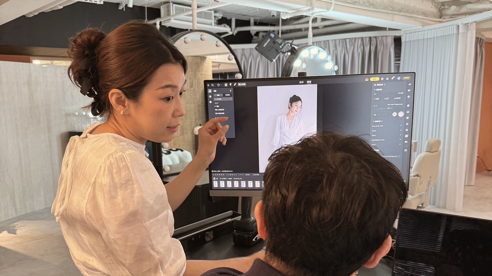
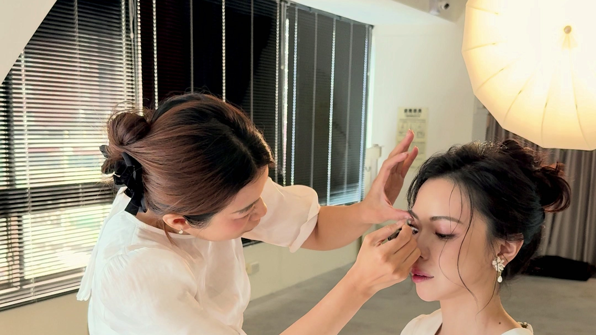
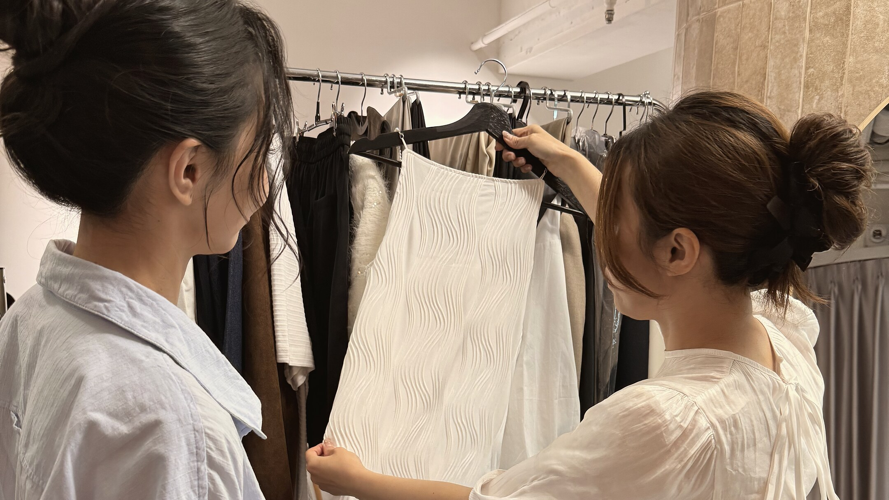
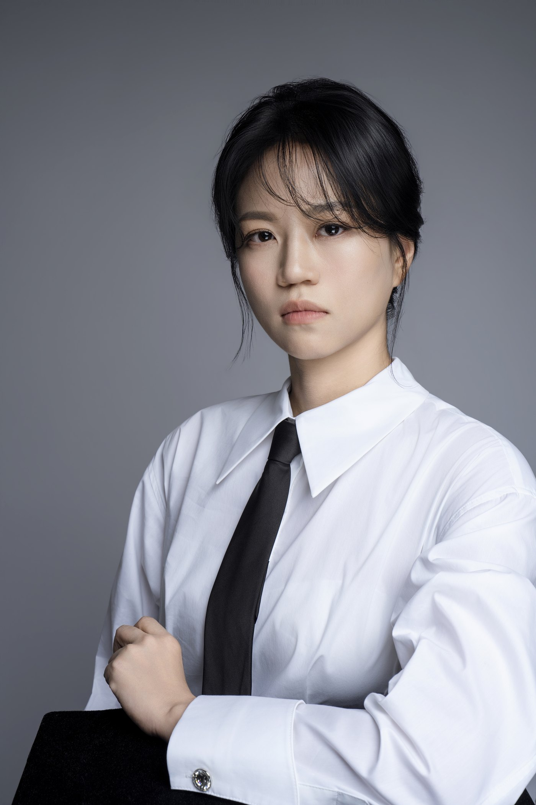
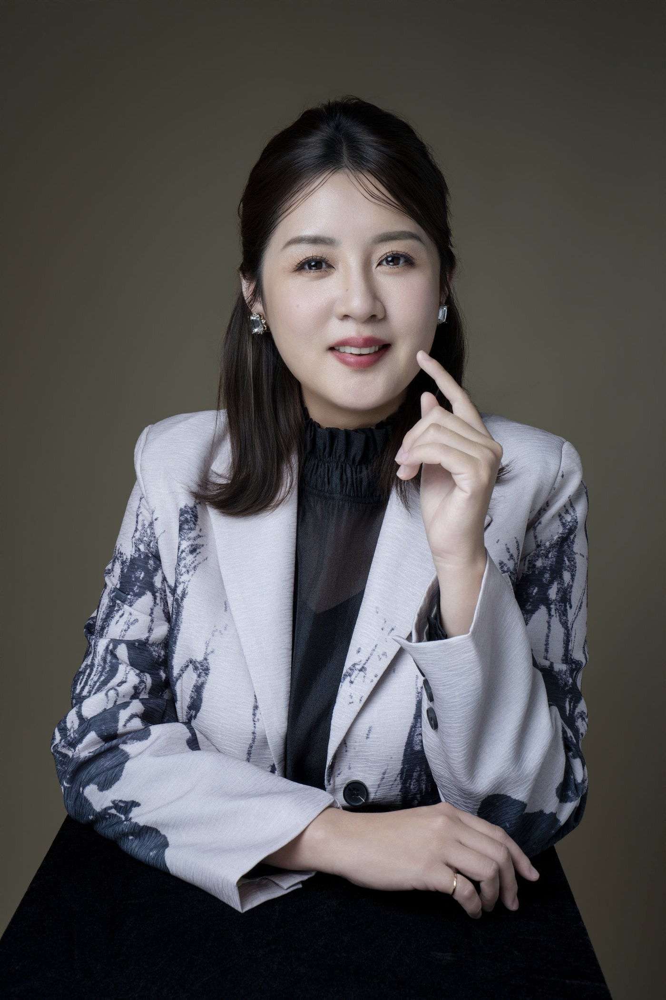

指南 · Guide
形象顧問是什麼？與造型師、形象管理師、個人色彩顧問的差別
名稱聽起來都像，做的事卻不一樣。用兩類決策把幾種專業一次分清楚，再看你現在需要哪一種。

指南 · Guide
形象顧問推薦看完了，還是不知道該找誰？決定之前先問這五個問題
推薦名單幫你找到候選人，問題才幫你判斷誰適合你。五題問完，再看方案有沒有回應你的答案。

指南 · Guide
形象顧問收費怎麼算？三種計價邏輯與服務差異
按時、按專案、整合型，三種沒有高下。先看懂報價的邏輯，才知道自己買到的是哪一種範圍。

指南 · Guide
LinkedIn 照片完全指南：尺寸、構圖、背景與五個常見錯誤
獵頭在你投遞履歷之前就看過那顆小圓圈。官方規格、構圖原則，加上多數人至少中兩個的五個錯誤。

職業視角 · Profession
女性領導者的形象定位：權威與親和，不必二選一
太強勢怕有距離，太親切又怕沒份量。這個兩難是真的，但它是一道假的選擇題。
洞察 · Insight
40 歲之後的形象照：資深，是要被看見的資產
該更新的是影像狀態，不是年紀。目標從來不是年輕十歲，是對齊你下一階段的角色。

觀點 · Perspective
形象顧問、造型師、攝影師差在哪？你需要的，可能不是你以為的
三個名字聽起來像同一件事，價格卻差很多。影響最大的，是快門之前的那個決定。

指南 · Guide
價格差十倍的形象照，到底差在哪？
一千多到十幾萬都有，貴的貴在哪？真正的價值，都在拍攝前後。

指南 · Guide
台中形象照怎麼選？照相館、攝影工作室與形象顧問的差別
照相館賣規格、攝影工作室賣風格、形象顧問做定位。先搞懂差別，預算才花在刀口上。

趨勢 · Trend
AI 形象照能用嗎？省下的是拍攝，增加的是信任落差
AI 適合虛擬形象與暫時頂著用的頭貼；但在商業信任的場合，照片要能跟你本人對得起來，而這件事 AI 給不了。

洞察 · Insight
「拍出真實的你」之前，先想清楚要讓人看見哪一面
真實不是一個固定的樣子。形象定位，就是先決定此刻要讓世界認識你的哪一面。

洞察 · Insight
形象照和個人品牌形象照差在哪？多數人搞混的三件事
差別不在照片的品質，而在照片背後有沒有一套系統：單張與系統、記錄與定位、拍完與用好。

職業視角 · Profession
企業主管形象照，為什麼沒有帶來更多信任？
照片很清楚、修圖很自然，卻沒有讓品牌更有說服力，因為它沒有回答客戶心裡的問題：「我為什麼要相信你？」
案例拆解與更多觀點，陸續發布。